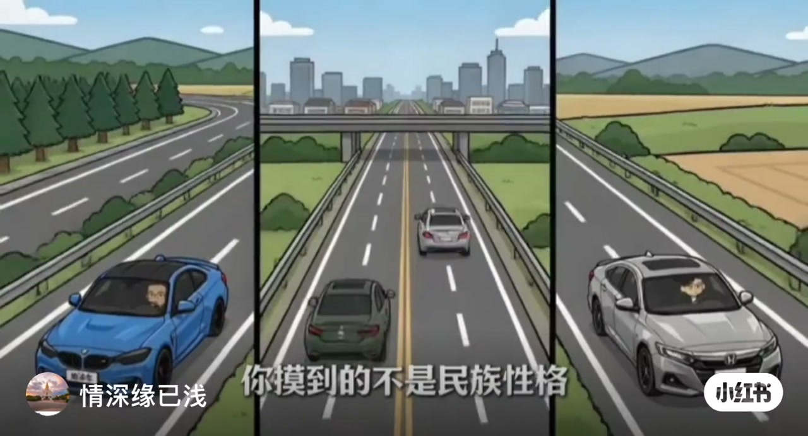
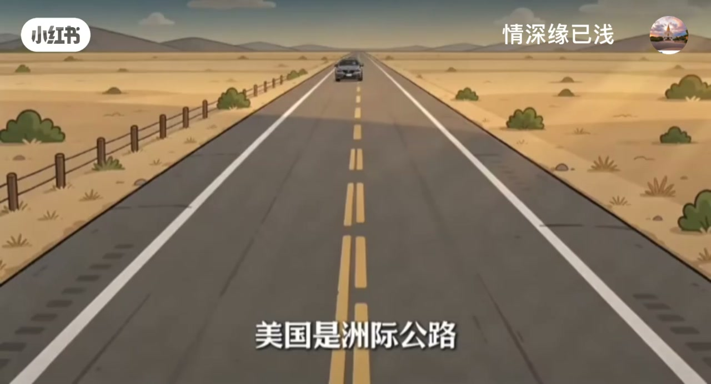
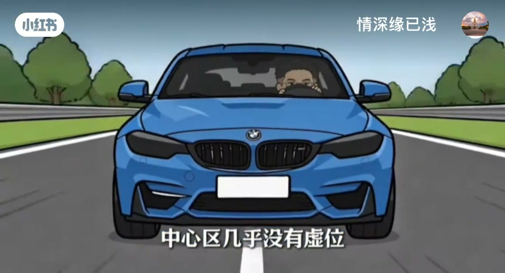
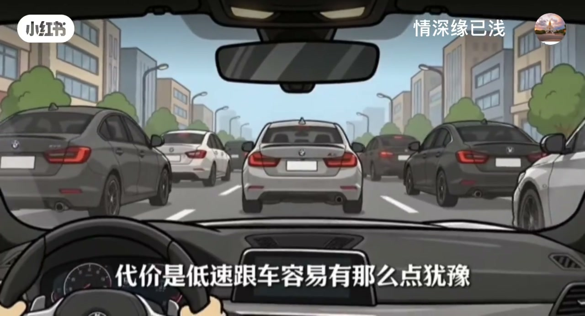
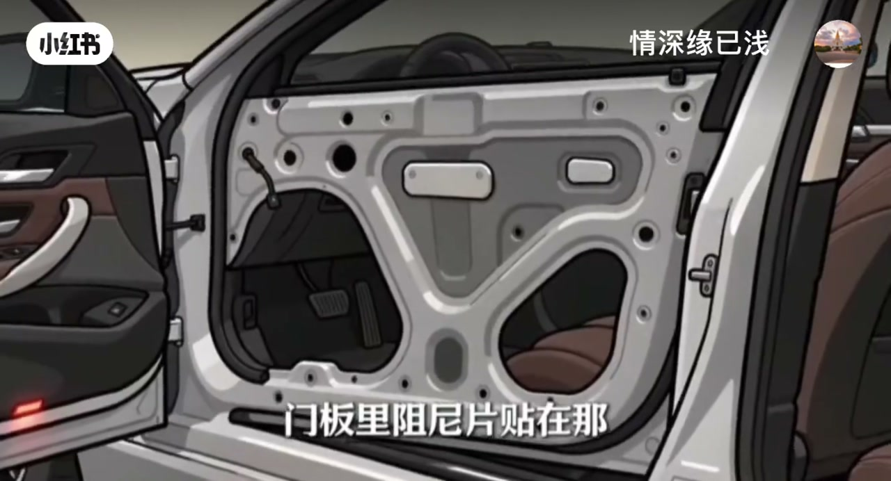
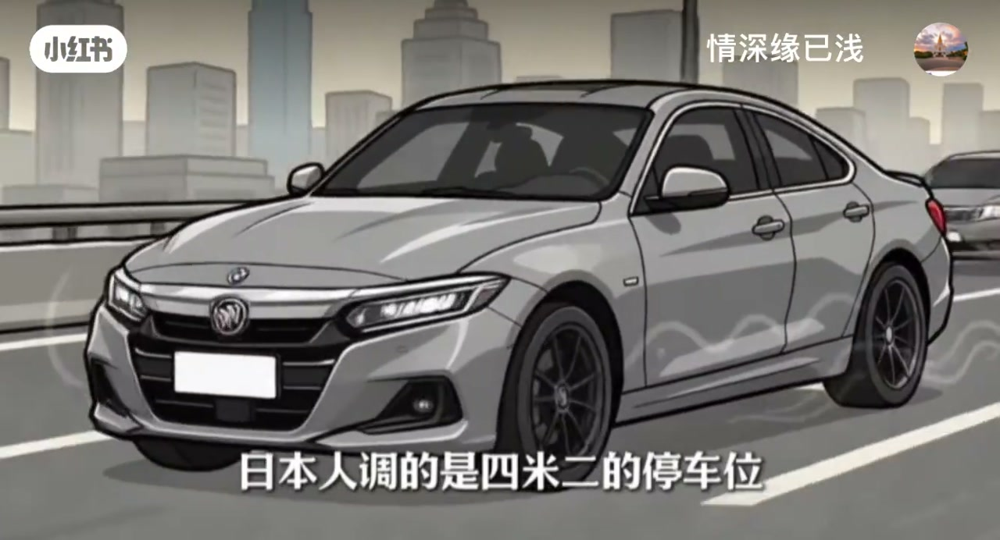

内容要点
「情深缘已浅」用动画对比德/美/日驾驶手感：摸到的不是「民族性格」，是人家的路。Whisper 仅 3 段，转向虚位、油门骗术、刹车前后段、变速箱取舍、NVH 与中国市场现实等，均依据画面字幕重建。
知识结构
德不限速高速；日低速限速+走走停停；美洲际公路长波起伏。
德中心几乎无虚位；美行程长虚位大；油门前段放大像「起步贼有劲」。
德前段大口制动力；日美偏柔；德双离合 vs 日 CVT。
德刻意留发动机声与路感；美优先干掉风噪胎噪；门板阻尼片。
单一大市场→软悬挂+大屏；日系调四米二车位；回小区门口自测。
三国手感差在路况目标函数：德为高速可控留锐利与声浪，日为低速好开做轻软，美为长途抗长波做虚位与隔音——到中国再被「软+大屏」改写一版。
00:00-01:10三条路决定三种车
开场三台车并置：开车感觉完全不一样，但「你摸到的不是民族性格，是人家那个国家的路」。德国不限速高速：画面强调稳得像焊在地上、车身姿态压得死死的。日本限速低（高速普遍约 80–100）、市区走走停停、车位还小，调校目标是低速好开——方向轻到一根手指能打，悬挂偏软，隔音重点压低速震动。
美国是洲际公路，又直又宽、油便宜，一趟能开很远，但路面有大幅长波起伏，于是悬挂软、行程长、方向虚位大。三家车摆到一起，人家其实在比地形。


01:10-02:40转向、油门骗术、刹车与箱
德系转向中心区几乎没有虚位；美系则行程长、虚位大。油门上有个「大部分人不知道的骗术」：很喜欢把油门踏板前段响应放大，结果你觉得起步贼有劲——反过来会觉得德系起步肉。
刹车：德系前段就给你一大口制动力、踩下去立刻点头，为高速紧急制动准备；日系和美系偏后段、前段更柔。所以德系开惯了换日系会觉得刹车不灵，反过来轻脚就能刹出头锤。变速箱直接决定「顿挫」二字：德爱双离合追换挡速度与效率，代价是低速跟车有点犹豫；日爱 CVT。


02:40-04:03厚实感与中国市场现实
NVH 也有取舍：德系刻意留一点发动机声和路感；美系优先干掉风噪和胎噪；门板里贴阻尼片，再调出低沉短促不带回响的关门声，于是觉得「这车厚实」。
现实补充：中国是最大的单一市场，家常款常被调成软悬挂、大屏堆满；日本人调的是约四米二的停车位。建议把车开到自家小区门口再感受——手感争议要落到你每天走的那条路上。


完整转录（3段）
以下文本由 Whisper medium 模型自动转录，可能存在少量识别误差，已尽可能修正。
德系美系三台车开车的感觉完全不一样直接说打你摸到的不是民族性格是人家那个国家的路咱们把三条路摆出来德国有不限速高速
限速低高速普遍也就80到100市区全是走走停停车位还小所以日系的调校目标是低速好开轻松不累方向轻的一根手指就能打悬挂偏软隔音重点压低速那些震动美国是周期公路又直又宽油还便宜一趟能开800公里不下车但路面有大幅的长波起伏所以美系的答案是悬挂软形成长方向虚位大方向虚位大听着像缺点
第三处刹车德系刹车前段就给你一大口制动力踩下去立刻点头这是为了高速紧急制动准备的日系和美系偏后段形成更长前段更柔所以德系车开惯了换日系你会觉得刹车不灵反过来换过去低脚能给你刹出个头锤啊再说变速箱这一项直接决定顿挫这两个字德系爱用双离合追求换挡速度和传动效率代价是低速跟车容易有那么点犹豫日系爱用CVT